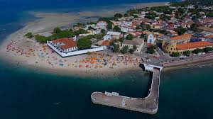
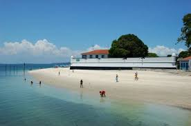
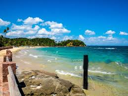

A Ilha de Itaparica é a maior ilha marítima do Brasil. Está localizada na Baía de Todos os Santos, no estado da Bahia, e seus 239 quilômetros quadrados de superfície são divididos entre os municípios de Itaparica e de Vera Cruz. Tem mais de 36 quilômetros de comprimento.
  